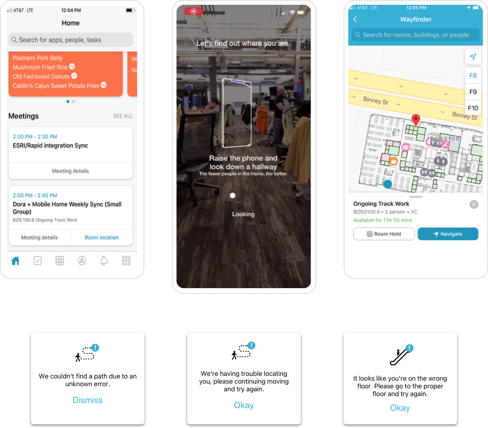
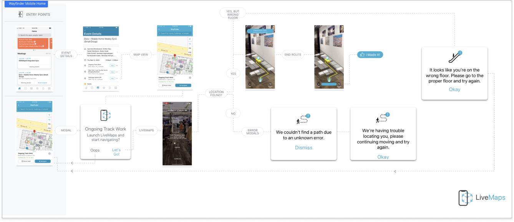
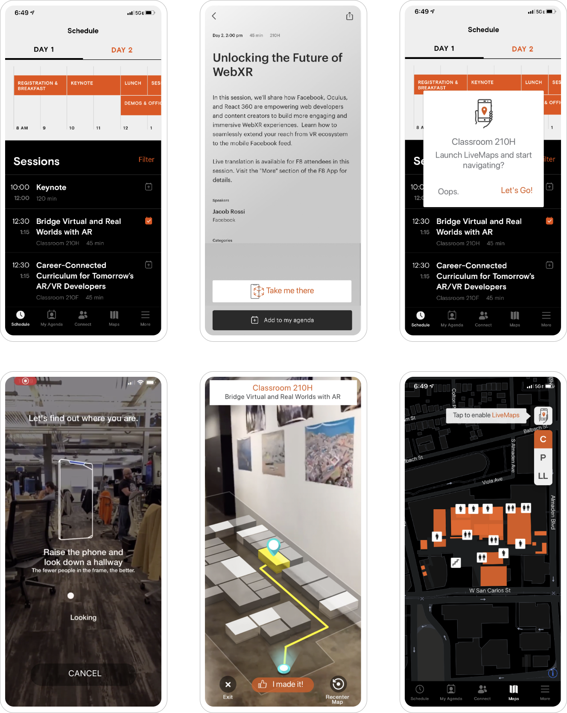
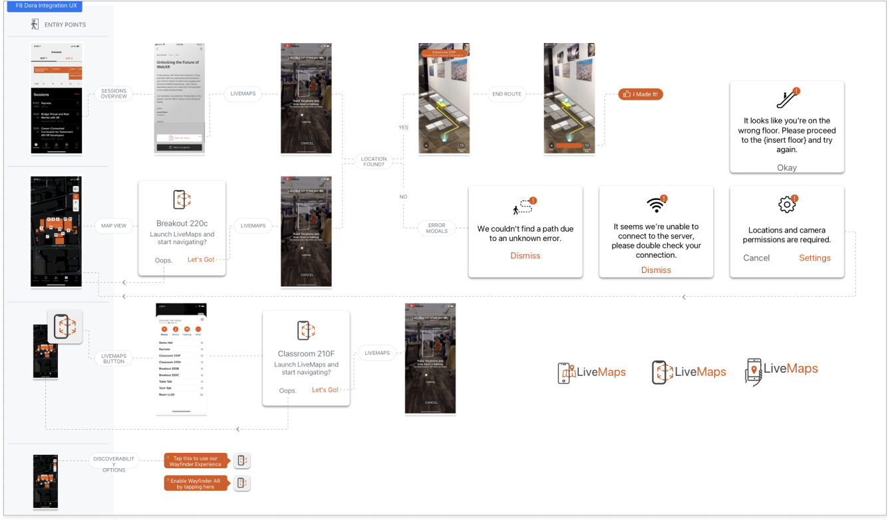
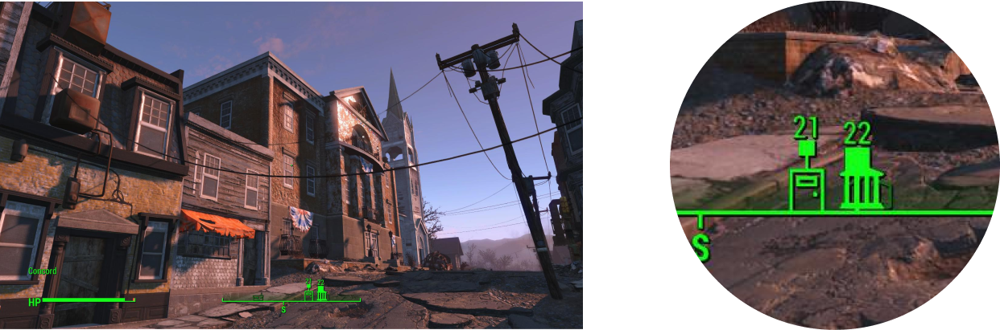

I got to design an internal employee app called 'Wayfinder' that allowed employees to quickly get access to their meetings, calendar, and an augmented reality navigation that would guide you live to the proper meeting room.


LiveMaps F8 Conference App
Due to the success of our internal Wayfinder app, the company asked us to build a version of it for Facebook's Annual F8 Conference. The app would allow attendees to browse all the conference panels, sessions, and events, as well as utilize the live augmented reality navigation.


Wearables Prototypes
Working with the World.AI team, we prototyped a maps product for smart watches based on the Open Street Maps data model. I spent a lot of time trying to come up with the best way to represent distance to an object. While walking or riding a bike, you needed to recognize distance at a glance. Should we use miles? Feet? Steps? During testing nothing really felt natural.

We were about 3 weeks into the covid lockdown. I had a lot of time to walk around the neighborhood and test the product to find a solution that felt right. Luckily, I was re-playing a lot of Fallout 4 (post apocalyptic Boston with zombies felt appropriate at the time). The UI display in the game obfuscates any translation of distance in lieu of a single number that counts down to the desired location as you approach it. This was a perfect way to handle the problem, which was that everyone walks/rides at a different pace, and one person’s step is not equal to another. Taking advantage of this design pattern, I was able to create a super simplified UI that fit nicely on a small watch face and created a really great user experience.